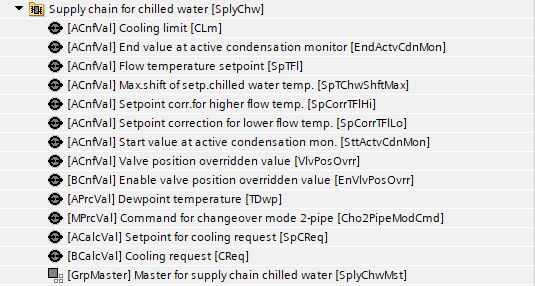
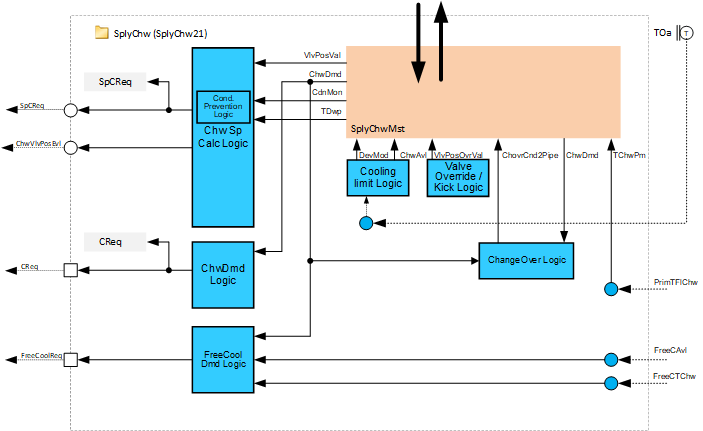
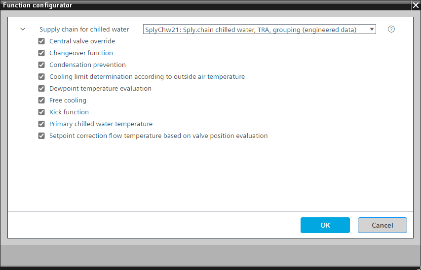
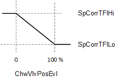
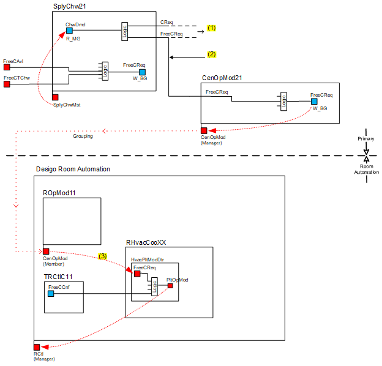

[SplyChw21] 供应链冷冻水，与房间进行数据交换（TRA 集成），通过分组机制
Program block, name / node subtype: [SplyChw21] Supply chain chilled water, data exchange with rooms (TRA integration), via grouping mechanism
Library hierarchy: Coordination
Family: SplyChw
项目树 | 图表 |
|---|---|
|
 |  |
Configurator


程序块存储在没有 I/Os. 的库中 使用auto-create and auto-connect函数创建 I/Os 和 /or 将它们连接到接口块，例如 R_A、CMD_B。或者，从包含库中预定义 I/Os 的文件夹中取出 I/Os，并从工厂中取出 /or，并将它们连接到接口块。
SplyChw21 通过分组机制收集和分析来自房间自动化区域消费者的冷冻水需求数据以供冷却设备使用，并将冷却设备数据分发回区域消费者。
SplyChw21 可以直接或通过中间协调器 (SplyChw23) 连接到冷却设备。
程序块中最重要的功能是：
- Cooling demand collection and evaluation
- Chilled water temperature setpoint calculation and its correction based on valve position evaluation of the consumers
- Cooling lockout (limit) based on outside air temperature
- Central valve override and valve kick
- H/C changeover (2-pipe)
- Condensation prevention
- Free cooling logic (requires CenOpMod21)
姓名 | 描述 | 类型 | 报警/通知类 | 趋势/类型 | |
|---|---|---|---|---|---|
SpCReq | Setpoint for cooling request | ACalcVal: Analog calculated value | N/A | N/A | |
CReq | Cooling request | BCalcVal: Binary calculated value | N/A | N/A | |
SpTFl | Flow temperature setpoint | ACnfVal: Analog configuration value | N/A | N/A | |
SplyChwMst | Manager for supply chain chilled water | GrpMaster：组经理 | N/A | N/A | |
描述 |
|---|
|
基于阀门位置评估的流量温度设定点修正 属于该选项的元素： Setpoint correction for lower flow temperature | ACnfVal: Analog configuration value Setpoint correction for higher flow temperature | ACnfVal: Analog configuration value |
Primary chilled water temperature |
Changeover function 属于该选项的元素： Command for changeover mode 2-pipe | MPrcVal: Multistate process value |
Cooling limit determination according to outside air temperature 属于该选项的元素： Cooling limit | ACnfVal: Analog configuration value |
Central valve override 属于该选项的元素： Enable valve position overridden value | BCnfVal: Binary configuration value Valve position overridden value | ACnfVal: Analog configuration value |
Condensation prevention 属于该选项的元素： Start value at active condensation monitor | ACnfVal: Analog configuration value End value at active condensation monitor | ACnfVal: Analog configuration value 冷冻水温度设定点的最大偏移|ACnfVal: Analog configuration value |
露点温度评估 属于该选项的元素： Dewpoint temperature | APrcVal: Analog process value |
Free cooling |
Kick function |
Cooling demand collection and evaluation
从区域消费者收集的冷冻水需求信号是多状态的，枚举如下：
- Off: Area is not using or requesting chilled water.
- CoolDmd: Area is using or requesting chilled water to meet cooling demand.
- FreeCool: Area is using chilled water but does not need it to meet current demand. The area may pre-cool to efficiently meet anticipated demand.
SplyChw21 评估接收到的数据并计算两个二进制输出引脚信号 [CReq] 和 [FreeCReq]，以便与设备进行通信。
Chilled water temperature setpoint calculation and its correction based on valve position evaluation of the consumers
SplyChw21 计算冷却请求 [SpCReq] 的冷冻水设定值，同时考虑以下因素：
- Base setpoint, SpTFl
- Valve positions of the members [ChwVlvPosEvl]
- Number of active condensation monitors in the room automation areas
- Dew points in the room automation areas
SplyChw21 通过组数据交换从房间自动化区域消费者收集阀门位置值，并计算代表性阀门位置百分比值 [ChwVlvPosEvl]。 [ChwVlvPosEvl] 是 10 个最高阀门位置的平均值：
- Are ≥ 10 %
- Have no disturbances
- Are from area consumers with an active chilled water demand or free cooling signal
线性函数（可配置）使用 [ChwVlvPosEvl] 计算 SpCorrTFlHi 和 SpCorrTFlLo 之间的冷冻水供应温度设定点修正值：

Key
SpCorrTFlHi | Setpoint correction for higher flow temperature |
SpCorrTFlLo | Setpoint correction for lower flow temperature |
ChwVlvPosEvl | Supply chain chilled water valve position evaluation |
计算出的设定点修正值被添加到基本设定点 SpTFl 中，该设定点通过防冷凝功能进一步调整，该功能可防止房间自动化区域中冷却元件上的冷凝。请参阅下面的防冷凝措施。结果是冷冻水冷却请求设定点值 [SpCReq]（图表输出引脚）。为了防止设定点异常低，图表中硬编码了 3°C 下限。
建议的设定点值 [SpCReq] 可以传送到冷却设备或其他协调器 (SplyChw23)。冷却设备程序可以从其他协调器接收附加输入，确定实际设定点值。
如果中央阀门超控处于活动状态，SplyChw21 会停止使用区域阀门位置来计算设定值。在这种情况下，SplyChw21 会传送先前的设定点值（设定点仍可响应冷凝警报序列而改变）。当超控不再处于活动状态时，设定点计算的正常过程将恢复。
Chilled water supply temperature
SplyChw21从冷却装置接收测量的冷冻水供应温度，并通过优先级15的分组数据交换将其分发到区域。
Cooling lockout (limit) based on outside air temperature
如果外部气温低于配置设置 CLm，消费者的冷冻水使用将被阻止。默认情况下，如果外部空气温度低于 14°C，冷冻水消耗设备（冷冻天花板或冷却盘管）的设备模式将通过优先级为 9 的多状态组写入设置为“关闭”。然而，在 2 或 4 管道系统中，目标是由优先级为 9 的二进制组写入命令的“可用冷冻水”BACnet 对象 (xxChwAvl)。这将禁用冷却并允许加热保持启用状态。
将 [TOa] 与锁定参数进行比较的逻辑是 SplyChw21 中函数的本地逻辑。迟滞（默认为 1K）可防止锁定功能频繁切换，并且还使用具有可配置时间常数的滤波器。滤波器和迟滞均可在图表中编辑。
对于 2 管或 4 管系统，SplyHw21 的加热限制 (HtgLm) 必须等于或小于 SplyChw21 的冷却限制 (CLm)。否则，在供暖和制冷季节之间，消费者设备模式可能会无意中设置为“关闭”。
Central valve override
分发信号以手动命令优先级为 8 的所有房间自动化区域冷冻水消耗阀。提供 BACnet 对象用于启用命令 (EnVlvPosOvrr) 并设置要命令的阀门位置 (VlvPosOvrr)。
Valve kick
为了防止执行器因长时间不活动而卡住，SplyChw21 以优先级 10 短暂、定期地命令冷冻水用户的阀门。
H/C changeover (2-pipe)
仅适用于具有 2 管转换的系统。否则禁用或删除。
SplyChw21 收集来自区域消费者的供暖/cooling 要求（通过HCDmd SplyChw 分组标签），并决定水系统是否应用于供暖或制冷。加热或冷却段数量最多的获胜。示例：50 个段需要冷却，30 个段需要加热。评价=冷却。
计算出的 h/c 状态以优先级 15 分发给区域消费者（通过 ChovrCnd2Pipe SplyChw 分组标签），以激活加热或冷却序列。在加热期间，冷却控制器被停用，在冷却期间，情况相反。
此外，可以通过以更高优先级命令 Cho2PipeModCmd 对象（切换模式 2 管道的命令）来手动覆盖 h/c 状态。 Cho2PipeModCmd 位于中央 AF 中，用于 2 管转换，SplyCho2Pipe11。分发给区域消费者的 h/c 状态仍将以优先级 15 发送。
Condensation prevention
为了避免冷冻辐射天花板设备出现冷凝，冷凝预防功能通过以下方式提高（上移）冷冻水设定点：
- Collecting and evaluating dew points
- Collecting and evaluating active condensation detectors
SplyChw21 通过组机制从设备收集主动冷凝探测器并评估结果。如有必要，冷冻水设定点会根据有效冷凝警报的百分比上调。
SplyChw21 从房间自动化区域收集并评估冷冻水设备的露点，以确定两个最高值的平均值。结果通过图表连接以优先级 16 写入 ChwTDwp（SplyCdnPrev11 中的多状态过程值）。如果不存在无干扰露点，则使用 ChwTDwp 默认值，14 [°C] / 57 [°F]。
最大值（无论是变换后的冷冻水设定值还是计算出的露点值）用于冷冻水温度设定值评估功能。
ChwTDwp 也可以被更高优先级覆盖，例如源可以是空气处理装置的提取露点。
Free cooling logic
SplyChw21 收集消费者的免费冷却要求并计算是否存在多余的冷却能力。请参阅上面的冷却需求收集和评估。典型的应用是冷却装置，当外部条件有利时，使用再冷却器来冷却水。
适用以下条件：
- Average room temperature collected from the areas is above 23 [°C] / 73.4 [°F] and there is no disturbance in the collection. A configurable hysteresis (default 1K) applies to the switch-on temperature.
- Central plant distributes the free cooling available signal [FreeCAvl] indicating that free cooling is available with no disturbance in the signal.
- Chilled water temperature for free cooling signal [FreeCTChw] is below 20 [°C] / 68 [°F] with no disturbance in the signal. A configurable hysteresis (default 1K) applies to the switch-on temperature.
中央设备可以通过 SplyChw 分组标签将自然冷却请求信号分发到房间自动化区域。这些区域可以接受此优惠并通过使用免费能源以舒适设定值进行冷却来进入舒适条件。
通过 SplyChw 组机制从房间自动化区域收集免费冷却需求。然而，为了激活该功能并分配自然冷却请求，需要 CenOpMod21 函数和组。 [FreeCReq] 输出引脚必须发送到 CenOpMod21 函数，请求信号从这里发送到 Desigo 房间自动化 HvacPltModxx 函数。
SplyChw21中的自然冷却功能需要CenOpMod21。下图显示了 SplyChw21、CenOpMod21 和 Desigo 房间自动化之间的信号流。

Key
|
1 | CReq和FreeCReq输出引脚信号，至冷却装置 |
2 | 图表互联 |
3 | CenOpMod群组成员，自动连接到FreeCReq目的 |